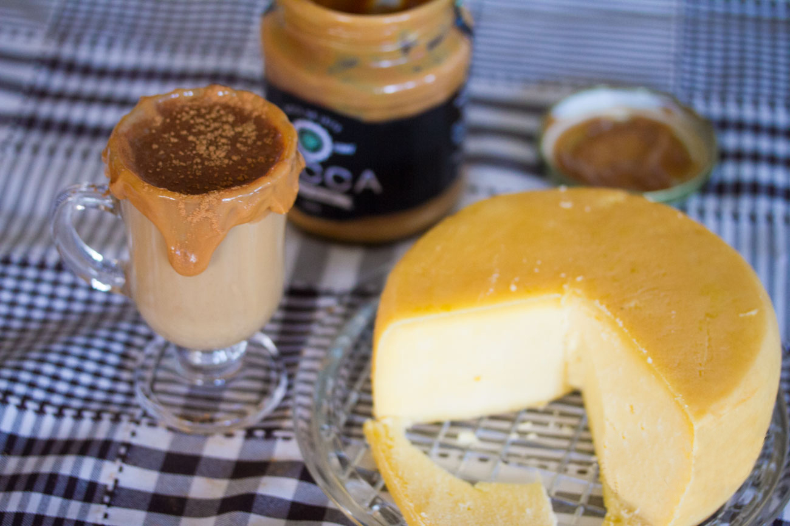
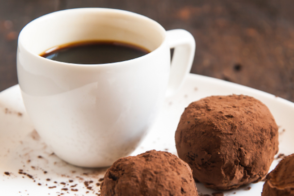

A Laranja, por ser uma fruta ácida, combina com um café suave e de baixo amargor. Doces à base de damasco ou abacaxi seguem a mesma linha de harmonização.
Combinação bem antiga, onde o salgado do queijo harmoniza-se com o café do tipo Bourbon, equilibrando a acidez presente.
Um café encorpado, com baixa acidez e notas de cacau harmoniza muito bem com o brigadeiro por similaridade, pois os sabores vão se intensificar quando mesclados.
